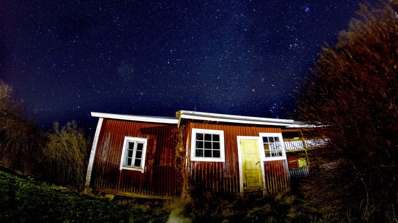
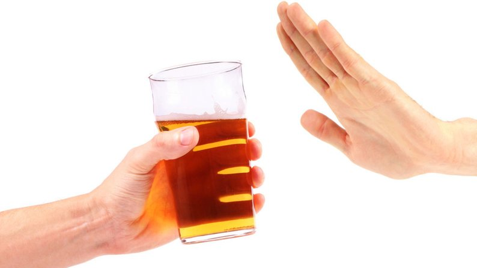

Хтось готується заздалегідь, а хтось багато працював і не встиг подумати, де ж провести святкову ніч. Для тих, хто досі не визначився з планами, це можливість обрати сценарій, який найбільше припаде до душі. Ви ще встигаєте обрати будь-який і втілити його в життя!
Програма "максимум"
Декілька таць з олів’є. Артилерія закусок на будь-який смак (від ролів з лососем і загорнутої в рулетики шинки до фірмового салату з "Мівіною", яйцями та крабовими паличками). Словом, процес приготування святкових страв починається мало не за тиждень до тієї самої ночі. А протягом наступного тижня вся родина знищує приготоване біля телевізора за столом у вітальні, який спеціально для таких випадків розкладають і ставлять у центрі кімнати.
Це свято шлунку, лінивого ситого кайфу, мінімуму пересувань, спеціальної домашньої одежі, яку не шкода заплямувати та одних і тих самих фільмів.
Новорічна ігроманія
Найкращі друзі великої компанії – командні ігри: настілки, пантоміми, челенджі, вікторини, квести. Придумайте заздалегідь конкурси та підготуйте символічні призи або запропонуйте пограти у «Монополію», «Веселого фермера», та хоч у «Твістері» – це завжди весело та цікаво.
Екзотика на мінімалках
Люди, які не так стомилися на роботі, влаштовують тематичну вечірку у стилі іншої країни. Прикрашають квартиру китайськими ліхтариками чи японськими кадомацу (це такі святкові композиції з бамбука, сосни й інших предметів, перев’язані солом’яною мотузкою — виглядають цікаво). Під ялинку підкладають не просто якісь заздалегідь домовлені подарунки ("ну-у-у, мені потрібен накопичувач на 1 терабайт, а мені — «Гаррі Поттер» в оригіналі"), а щось особливе в дусі обраної країни: саморобні свічки, як у Швеції, або парні предмети, які в тому ж Китаї символізують міцний зв’язок дарувальника й отримувача.
В диких умовах
Варто хоча б раз забути про тепло своїх батарей і комфорт ліжечка та зустріти Новий рік у лісі або на березі замерзлої річки. Вам гарантована неймовірна тиша, безпечний запуск феєрверків і відсутність будь-яких подразників на кшталт п'яних сусідів і телевізора на всю гучність. До 31 грудня вдосталь часу: ще встигнете знайти місце в лісі, до якого зможете доїхати на машині й не застрягнути по дорозі.
Святкуємо активно
Є багато варіантів активного Нового року. Покататися на лижах у лісі або на облаштованій трасі. Сходити на ковзанку, де будуть феєрверки, музика і цікаві люди. Піти в зимовий похід з якоїсь бази відпочинку.
Відмова від алкоголю
Згадайте, коли ви востаннє святкували Новий рік без алкоголю? Якщо років 10 тому, то безалкогольне свято виявиться дійсно новим враженням. Звісно, ви ризикуєте опинитися на різних хвилях із друзями й родичами, але так буде навіть цікавіше.
Чим займатись, якщо до "алкогольної компанії" вас не приймають? Дослідити незвичайні місця свого міста з чаєм у термосі, влаштуватися волонтером, кататися на ковзанах, лижах чи сноуборді. Взагалі відмова від новорічного келиху може стати гарним приводом позбутись інших шкідливих звичок.
